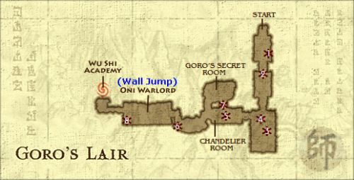
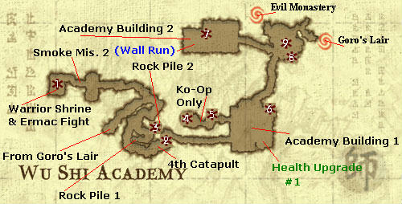
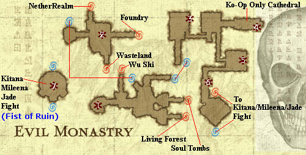
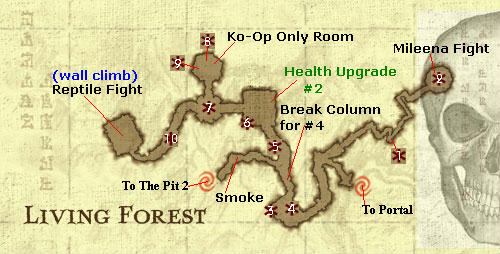
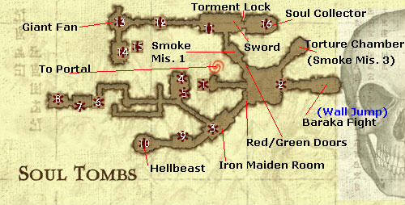
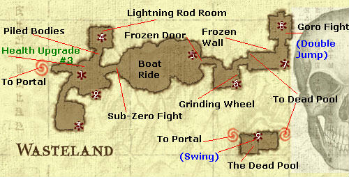
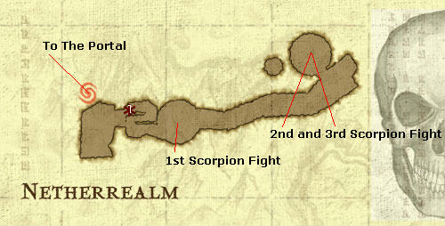
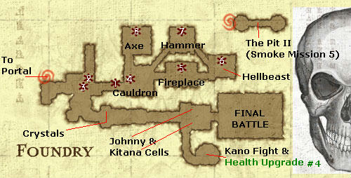

Choose Your Game
Red Koin Locations
Goro's Lair Wu Shi Academy
Portal / Evil Monastery
Living Forest Soul Tombs
Wasteland Netherrealm Foundry
Map Keys:
White # = Red Koin Location and number.
(Blue in Parenthesis) = Location where ability is
gained.
Green, followed by # = Health Upgrade Locations
Goro's Lair

1. Section 1 of Goro's Lair. Simply throw an enemy into the skeleton on the wall
for your very first Red Koin.
2. Section 2 of Goro's Lair. Here, the Red Koin is hidden in the lower left
corner. You will need an enemy for this. Do a launch or throw that launches.
Then while the enemy is airborne, jump into them and perform an air throw. This
will propel you slightly higher and into the Koin.
3. The Pit. If you're playing Ko-Op you will hear one of your characters say
something about the moon. This is a hint. While you are on the bridge, fire
projectiles at the moon. The exact spot to hit is unclear. But keep at it and
the Red Koin will appear on the bridge.
4. The Pit. After crossing the bridge, jump down to the south. You'll land on a
ledge with another Red Koin.
5. Chandelier Room. You'll notice the obvious Red Koin in the background. But
we'll get to that later. For now, toss an enemy high into the chandelier. It
will crash down and reveal a Red Koin.
6. Stalactite Room. Impale all the enemies onto the ceiling spikes to cause a
Red Koin to appear in the lower left corner by the breakable wall. You'll need
to use the air throw method explained in B.
7. [++] Stalactite Room. Step on the Ko-Op switches. In this next room you and
your partner will need to hurl an enemy at each of the bells, relatively close
in timing. A bridge will then appear and allow you to obtain the caged Koin seen
in the Chandelier Room.
8. Pit Part 2. After defeating the boss, long jump across the bridge. At the end
you will need to long jump south onto a small platform holding a Koin. It's
easier to see if you can go into Panoramic Cam.
Return To Top
Wu Shi Academy

1. [*] Warrior's Shrine. You'll need Swing ability for this. At the very
beginning of the Road to the Academy area, take a left at the first path split.
Long Jump the pit, Fist of Fury the statue and move on. Now you'll need to Swing
on the Bamboo Polls and activate the statue. Once inside, inspect the left most
statue 3 times to trigger a fight with Ermac. After his defeat you'll get a Red
Koin.
2. Road to the Academy. When you reach the catapult area, head forward and knock
the Masked Guard into the catapult near him (the 3rd). This splatters him on a
wall and leaves behind a Koin. To access it, backtrack slightly and take the
steps up. Take the right path and knock the Tarkata into the Spike Balls. This
removes the barricade by the Masked Guard. Return and continue on, jumping
across the spike pit. The Red Koin will against the wall.
3. Road to the Academy. Right after the first Masked Guard is a Tarkata with a
catapult above him. Launch him into it and it will break a barrier. Backtrack to
the steps with a Lion Statue. Climb them and take the left path to your Koin.
4. [++] Academy Area I. Step on the switches to open a door. You cannot enter
until the fighting in this area has ceased. Walk to the end of the path for an
easily obtainable Red Koin.
5. [++] [*] Academy Area I. This is also in the Ko-Op room. Within the tree
branches is another Koin. You need to Double Jump to obtain it.
6. [*] Academy Area I. This is a very obscure one. In the area where you cut the
ropes to dump the large pots, there will be two walls on either side of that
path. The left wall holds a Koin atop it. You must Wall Run up it then perform a
Double Jump.
7. Academy Area II. Jump atop the building with a Spike Ball imbedded in it's
side. Jump onto the ledge to your right. Inside will be the Johnny Cage VS Koin.
8. Portal Pathway. Head to the area with 2 Tarkata and a spiked wall. There are
two methods to get this Koin. The main idea is to impale a Tarkata on the wall
and use his body as a stepping stone. It's easy to do if you have Double Jump.
But, this can be done on your first pass by throwing one Tarkata low and the
other high, using them as steps to the Koin.
9. Portal Pathway. Right in front of the portal is a large spike pit. Once you
have the Swing ability you can jump (by the Save Statue) onto the poles. Swing
left and onto the small platform nesting a nice Red Koin.
Return To Top
Portal / Evil Monastery

1. [++] Right after you enter from the Academy, head left and up the ramp. Use
the Ko-Op switches to extend a platform. Hop up to find your next Koin.
2. [*] On the lower level, take the portal that leads to the Foundry entrance.
Right in front of the Foundry is a Golden MK symbol. You must perform a fatality
on it to get a Red Koin. To do this, hop up to the Wasteland entrance. Throw a
Tarkata down to the symbol and take care of business.
3. Entrance Room. Look out the first window. There will be a Golden Koin. You
must throw a projectile at it to get the Red Koin.
4. [++] [*] Spike Room. Step on the Ko-Op switches and enter the underground
passage. Inside you'll need to Fist of Fury the statue to raise the gate and nab
the Koin.
5. Evil Buddha Room. You'll need to impale an enemy on each of the Buddha's
spiked hands. Afterwards a Red Koin will appear behind it's head.
6. Monastery Tower. Past the monk you first see will be a broken column. Jump
atop it then jump to the left onto the roof. Head all the way left for the
Katana VS Koin.
7. Kitana Battle. Simply re-enter the area to make a Red Koin magically appear.
Return To Top
Living Forest

1Y. [*] Entrance. You'll need the Double Jump & Swing abilities. Double Jump and
grab onto the tree branch south of the Save Statue. Swing up into the Tree
Village. About halfway through the village you'll pass a flat tree platform
that's all the way to the right. Look right to see a Golden Koin. Nail it with a
projectile to get your Red Koin.
2Y. [*] Entrance. At the end of the Tree Village (as mentioned in letter A)
you'll run into Mileena yet again. Her defeat nets you another Koin.
3Y. Small Waterfall Area. To the left there will be two clay soldiers. Break
one's shield then toss him into the door of the small structure. Inside will be
your Koin.
4Y. Small Waterfall Area. This begins in the Large Waterfall Area. Lure a clay
soldier over to the large stone pillar located on the right side of the stream,
to the right of where you entered. Toss him into it and return. The Waterfall is
no more and you can get your Reptile VS Koin.
5Y. Large Waterfall Area. This Koin is hidden behind the living tree near the
clay soldiers.
6Y. Snake Head Entrance. Just to the left of the Giant Snake Head, there will be
a small stone wall. It's broken on one corner. Jump behind it there and search
for the hidden Koin.
7Y. Statue Room. Re-Enter the room to do another round of statue bashing. This
nets you a Koin and some experience.
8Y. [++] Statue Room. Step on the Ko-Op switches in front of the Buddha. Inside,
there will be an obvious Koin to the far right of the room.
9Y. [++] Statue Room. Right behind the rock where you found H, will be another
hidden Koin.
10Y. The Tunnel. Notice every other arch has a Reptile Eye? Well the 3rd one is
not lit. You must stand on the decline after the 3rd and blindly aim your
projectile at the 4th eye. It can be a pain but keep at it!
Return To Top
Soul Tombs

1Y. Entrance. This can easily be passed by. Right after you exit the portal look
to your left for a Golden Koin. Nail it for another Red Koin.
2Y. [*] Soul Tomb Main Room. Exactly opposite where you enter will be a large
arch. Wall Run up one side and Double Jump into the Koin.
3Y. Red Room I [Iron Maiden Room]. Knock 3 enemies into the Maidens for a Koin.
4Y. Red Room II [Balcony Room]. Cross the room and climb the wall. To your
immediate right will be a statue. Fist of Fury it. Jump right to a small
platform, then onto a small wooden beam, then to another platform for the Baraka
VS Koin.
5Y. Red Room II [Balcony Room]. Drop down to the first floor after busting the
statue, the Koin should be right there.
6Y. [*] Red Room III [Spiked Pathways]. Right above the exit into the Butcher
Room you'll see a skull switch. Double Jump and kick it to spawn a Shadow Priest
on the center platform. Kill him for your Koin.
7Y. [*] Red Room IV [Butcher Room]. This Koin is obstructed from view by a piece
of the foreground. Head to the lower left side of the room and do a Wall Jump
off the wall to get the Koin.
8Y. Red Room V [Spiked Ceiling Room]. Look outside, near the center of the room.
A floating Golden Koin awaits your projectile. Note that Liu Kang's fireball
does not want to penetrate the wall but Kung Lao's hat does. So if you are Liu
and solo, throw a Tarkata into that section of the wall to break it first.
9Y. Red Room VI [Fire Grates]. In the background will be a skeleton walking
around. Throw skulls at him until he dies. That'll teach him!
10Y. Red Room VII [Orochi Room]. Stand on the small box-like platform for a few
seconds until it lowers and reveals a Koin.
11Y. Green Room II [Chains Room]. This is one of the most obscure ones in my
opinion. On the right side of the room, watch the chains in the background.
Eventually one will rise with a 4-way bone hook on it. Quickly knock an enemy
into it to reveal the Koin.
12Y. Green Room III [Outdoors]. On the center platform knock a Tarkata into a
Pterodactyl flying overhead for the Koin.
13Y. Green Room IV [Fan Room]. Forget the Koin right now. Instead proceed to the
next room. You'll need to knock a Tarkata into the spikes to lower the platform.
Hop up and continue around. You'll be back in the Fan Room but higher up. Jump
to the center platform. Knock the Tarkata into the fan's blades. This will slow
the fan. Then I simply Long Jumped off the platform into the Red Koin.
14Y. Green Room V [Spiked Platform Room]. On the first floor look to the left.
There will be a stone statue that you can Fist of Fury. Behind it will be your
Koin.
15Y. [*] Green Room V [Spiked Platform Room]. Right after getting M, Wall Jump
onto the small cage for a Red Koin.
16Y. Green Room VI [Soul Collection Room]. Simply re-enter this room after
breaking the orb to find a Red Koin.
Return To Top
Wasteland

1. Entrance. Impale an enemy on the large center spike for a Koin.
2. Entrance. Climb to the upper area and head slightly to the right. In a little
alcove will be your Koin.
3. Boulder Room. Make your way to the top. It's very hard to miss this one, it
is even shown in the cinematic. It's on the right side of the top area.
4. Elemental Knights Room. Re-enter this room to find our old friend the Orochi
Hell beast. Beat him again for a Koin.
5. Blood Lake. After your lengthy ride you'll be at a large door with two
gargantuan Lion statues on either side. Wall Run up the left wall and onto the
Lion's back for the Sub-Zero VS Koin.
6. Spiked Wheel Room. After climbing Sub-Zero's Icefall, do a Wall Run over the
top of the wheel for another Koin.
7. Lion's Temple Room. On the far right side, near the bottom you'll see a
Golden Koin just off the balcony. As per usual, hit it with a projectile to get
your Red Koin.
8. Goro's Room. Re-Enter this room to find another magical Koin awaiting you.
9. Dead Pool. Knock a few zombies into the acid to make a Koin appear high on
the metal grating in the background. Simply climb the grate to get it.
Return To Top
Netherrealm

1. On the first stairway down, perform a Double Jump onto the archway above the
stairs to get the Koin.
Return To Top
Foundry

1. Entrance. On the lower level, take the left path past the Save Statue. Two
archers will ambush you. Throw one into the cracked wall on the left. A new room
opens with a lava pit. Throw an archer into the pit and use his body to hop up
to the Scorpion VS Koin.
2. Entrance. If you climb the ramp to the higher level, you'll notice a few
boards right above you. You'll need to Wall Run and jump onto those boards to
find the Koin.
3. Entrance. There is a wooden shaft almost directly above the Save Statue.
You'll need to Double Jump off the higher level and Wall Jump from side to side
up to Koin. It can be a bit tricky.
4. Foundry Hub. Jump and kick one of the passing by pots to reveal a Koin down
on the platforms in the lava.
5. Furnace Room. Go inside the furnace and walk left. A Koin is hidden there.
6. Orochi Room. Go the very center of the second floor. Fist of Fury the back
wall and you'll reveal a Golden Koin that you need to shoot.
7. Axe Forge. The goal here is to catch an enemy in the path of the two large
swinging hammers. I find the easiest way to be using the R2 Special and vaulting
them upwards as the hammers come together.
8. Demonic Fountain. After you obtain the Axe, use it to break the pipes in the
Fountain.
Return To Top
Mortal
Kombat Komplete